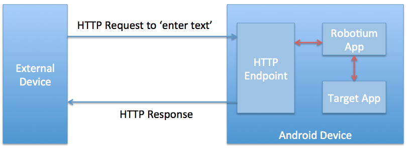
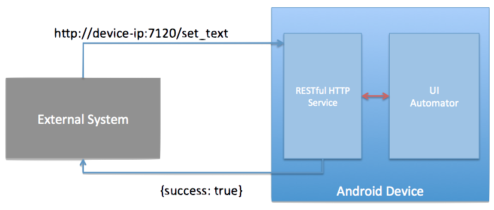
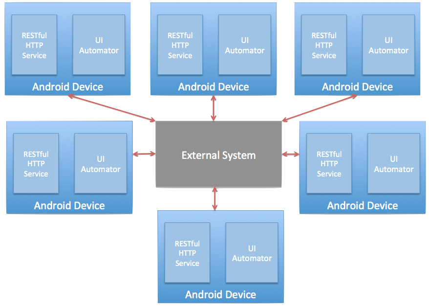

Android Test Automation Eco-system
- Instrumentation Test Cases
- Robotium
- UIAutomator
- Calabash
Robotium
http://code.google.com/p/robotium/
- Simple wrapper around instrumentation test case
- Runs along with the target app
-
Drawbacks
- Sign the target APK everytime before test
- Should have the knowledge of android app lifecycle
- Only option is Java
Calabash
http://calaba.sh/
- Ruby wrapper around robotium
-
How it works?
- Little HTTP server running in the android device
- Waiting for instructions to execute
- Ruby/Cucumber based driver to send the instructions to the android server
- Test the target app with the calabash cucumber steps
Calabash - continued..
- Workflow

-
Drawbacks
- Sign the target APK everytime before test
- Cannot assert anything outside the target application
- No support for multiple devices
UIAutomator
http://developer.android.com/tools/help/uiautomator/index.html
- Real black box testing
- Similar to instrumentation framework with deployment
- No Signing of APKs required
- Control over the entire device
-
Drawbacks
- Java being the only language to control
- Android API 16+
- No way to control multiple devices
Honeydew
https://github.com/amplify-education/honeydew
- No Signing of APKs required
- Control over the entire device
- Rich ruby DSL
- Also, Possible to use with your fav lang via http
Honeydew - continued...
- Similar to calabash in architecture
- 
Honeydew - even more...
- Support for multiple devices
- 
<Thank You!>